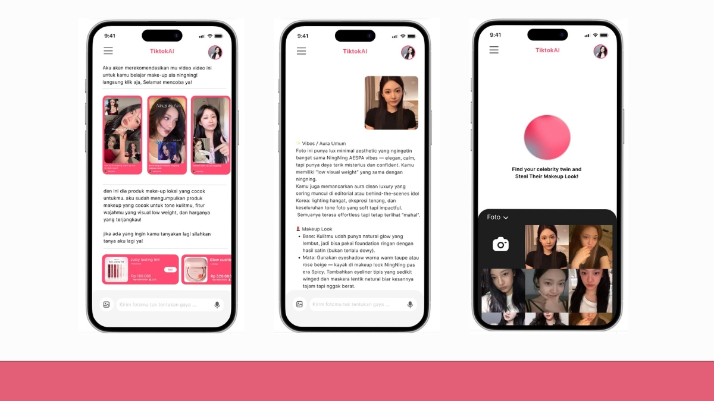
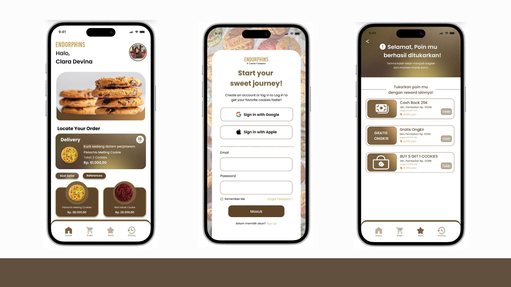
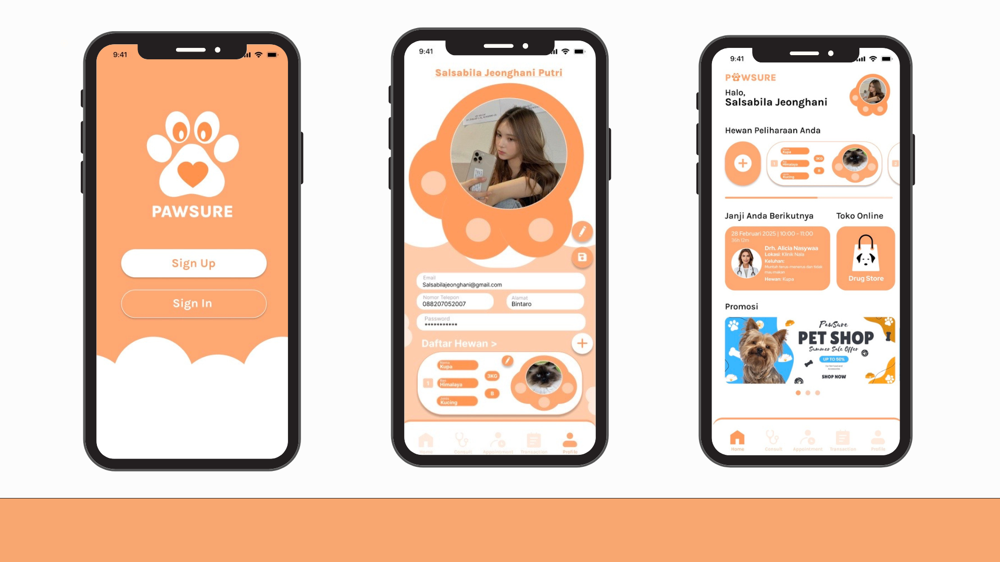
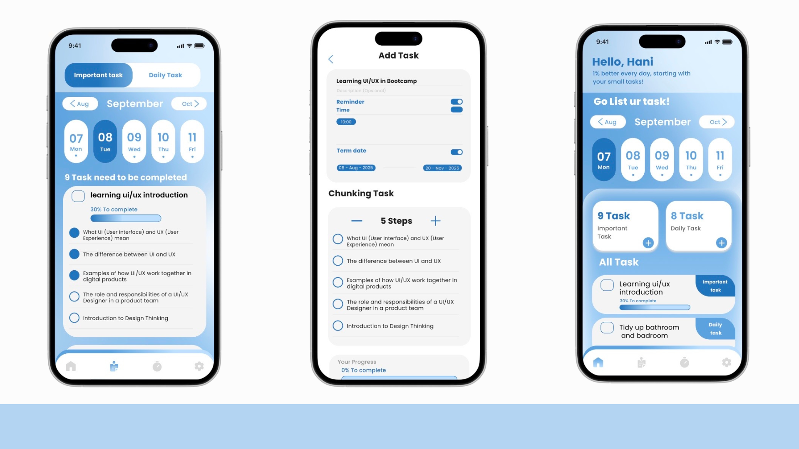
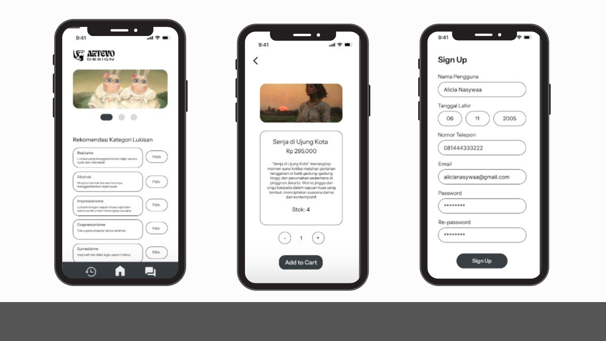

Koleksi Proyek
Sebuah kurasi karya yang merepresentasikan pendekatan saya dalam menyelesaikan masalah melalui desain yang fungsional dan estetis.

AI Beauty Titkok
Penambahan fitur AI cerdas di TikTok yang membantukan rekomendasi makeup sekaligus menaikan penjualan di TikTok Shop.
Lihat lebih detail
Endorphins
Endorphins adalah aplikasi pemesanan cookies yang dirancang untuk menghadirkan pengalaman yang personal dan menyenangkan bagi pengguna.
Lihat lebih detail
Mochiscake Website
Sebagai CTO proyek kelompok "Mochiscake", saya membangun website Pembelian "mochiscake" menggunakan HTML/CSS untuk mengelola strategi media sosial untuk validasi pasar.
Lihat Detail Cerita
Pawsure
Solusi kesenjangan layanan kesehatan hewan di Indonesia. Aplikasi kami menyediakan layanan all-in-one: telekonsultasi , booking janji temu , e-pharmacy, dan rekam medis digital.
Lihat Detail Cerita
Syncra
Syncra adalah aplikasi manajemen waktu untuk individu dengan masalah kesehatan mental ADHD, memadukan Pomodoro Timer dan Task Chunking agar fokus, teratur, dan tidak kewalahan.
Lihat Detail Cerita
Artefo
Melalui Artevo, kami menghadirkan ruang digital bagi seniman dan penikmat seni untuk terhubung. Pengguna dapat memesan lukisan favorit, berinteraksi di forum seni, hingga mengelola transaksi dengan mudah.
Lihat Detail Cerita